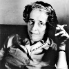

Hannah Arendt (1906–1975) bir gazeteci, deneme yazarı ve siyaset felsefecisidir. 20. yy’ın en temel sorularından birine yanıt bulmaya çalışmıştır: İnsandaki kötülük yapma potansiyeli nereden kaynaklanmaktadır?

Nazi savaş suçluları ile ilgili makale ve kitaplarında, soykırım şiddetinin ve vahşetin sadece hastalıklı beyinlerin ürünü olduğu düşüncesine karşı çıktı. Bu suçları işleyen Nazi liderlerinin dışarıdan bakıldığında son derece sıradan insanlar olduğunu anımsattı. Tüm bu vahşetin sorumlusu olarak tek tek insanları değil bireyleri körcesine çoğunluğun fikrine uymaya zorlayan sosyal güçleri suçladı.
Arendt, Yahudi bir ailenin çocuğu olarak Almanya’nın Hanover şehrinde doğdu. Heidelberg Üniversitesi’nde felsefe okudu ve yirmi iki yaşında doktorasını tamamladı. Doktorasını aldıktan sonra Almanya’da felsefe dersleri vermeye başladı. Bu dönemde sahip olduğu yakın dostlarından biri de kısa süreli bir ilişki yaşadığı filozof Martin Heidegger’di (1889–1976).
1933 yılında Adolf Hitler (1889–1945) iktidara gelince Arendt ülkeden ayrılmak zorunda kaldı. Paris’e yerleşti. Yahudi yetimleri Filistin’e gönderen yardım kuruluşları için altı yıl boyunca çalıştı. Naziler 1940 yılında Fransa’yı işgal edince bir kez daha kaçmak zorunda kaldı. Hayatının geri kalan kısmının büyük bir bölümünü geçireceği New York City’e yerleşti.
Arendt, ilk önemli kitabı The Origins of Totalitarianism’i (Totalitarizmin Kökenleri) 1951 yılında yayınladı. Ardından diğer eserleri geldi: The Human Condition (İnsanlık Durumu / 1958), On Revolution (Devrim Üzerine / 1962), Men in Dark Times (Karanlık Zamanlarda İnsanlar / 1968).
Belki de en ünlü eseri Eichmann in Jerusalem: A Report on the Banality of Evil (Kötülüğün Sıradanlığı / 1963) idir. Bu kitabı Nazi savaş suçlusu Adolf Eichmann’ın (1906–1962) yargılanması sırasında New Yorker Magazine için yaptığı muhabirlik deneyiminden sonra yazmıştı. Dava sırasında Eichmann ezik ve mahvolmuş bir kişiyi andırmaktaydı. Oysaki bu sinmiş adam, Yahudi Soykırımı’nda milyonlarca insanın katlini planlayan beyinlerden biriydi. Kötülüğün Sıradanlığı işte tam da bu çelişkiyi analiz ediyordu.
Kötülük ve şiddetle ilgili çalışmalarıyla ün kazanan Arendt, Cornel ve Chicago gibi pek çok üniversitede ders verdi. Princeton Üniversitesi’nde profesörlük unvanını kazanan ilk kadın oldu (1959). Altmış dokuz yaşındayken New York’taki dairesinde hayata veda etti.
Ek Bilgiler
1- Arendt felsefi metinlerine ek olarak Rahel Varnhagen (1771–1833) isimli bir Alman aydınının biyografisini de yazdı (1958). Varnhagen’ın Napolyon döneminde pek çok entelektüel çevreyle ilişkisi olmuştu.
2- 1941 yılında ABD’ye giden Arendt 1951 yılında ABD vatandaşı oldu.
3- İnsanlığa karşı işlediği suçlardan dolayı mahkum olan Eichmann, 1962 yılında asıldı. Yakalandığı sırada Buenos Aires’teki bir Mercedes Benz fabrikasında çalışmaktaydı. İsrail’de idam edilen tek kişidir.